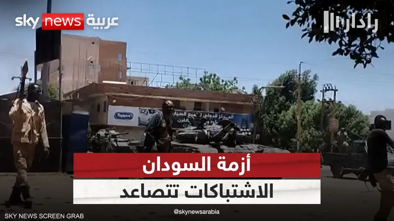

ذلكم هو مجمل المشهد العملياتي، ولكن تطورات بُعيد الحرب بشهر واحد، أوضحت طبيعة هذه الحرب التي تختلف عن الحروب التقليدية التي شكلت خبرتي الدعم السريع والجيش السوداني، كما أنّها فاجأت المجتمع السوداني لغرابتها وانحرافها عمّا درجت عليه التجربة السودانية في الحروب، وأهم أربعة مظاهر شكلت الطبيعة الجديدة للحرب، هي: 1- دخول الدعم السريع لمنازل المواطنين، وإخراجهم منها والاستيطان فيها، وقتل ساكنيها، وانتهاك أعراض من يرفض الخروج والاستسلام، ما دفع إلى حالة نزوح ولجوء واسعة تقدرها المنظمات الأممية بعشرة ملايين مواطن، وقد تكررت ذات مشاهد احتلال المنازل وقتل المدنيين في دارفور، وكردفان، وولاية الجزيرة التي دخلتها الدعم السريع بعد ثمانية أشهر من بداية الحرب، وتقدر مصادر مستقلة قتلى ولاية غرب دارفور وحدها من إثنية المساليت بخمسة عشر ألف قتيل.
2- والمظهر الثاني الذي اندهش له الناس هو حالة النَّهب والسَّلب للأموال والممتلكات، من منازل المواطنين، والأعيان المدنية، ونقلها إلى ولايات دارفور وما وراءها من دول الجوار الأفريقي، ما أدخل كلمة (الشَّفْشَفَة) في قاموس التعامل اليومي للدلالة على هذا السلوك، والمصطلح يحمل في قواميس العربية معنًى قريبًا من نتائج النهب، مثل: التيبيس والإحراق. وأحدث ذلك حالة إفقار جمعت بين الذين يملكون، والذين لا يملكون.
3- والمظهر الثالث التركيز الممنهج لقوات الدعم السريع على تدمير البنية التحتية الاقتصادية، في القطاعات الصناعية، والمصرفية، والأسواق، بالرغم من صعوبة تقدير ما تعرّضت له البنية التحتية، التي تأثرت بها بشكل مباشر عشر ولايات تعتبر العمود الفقري للاقتصاد السوداني، وتقدر نسبة التدمير في القطاع الصناعي بما لا يقل عن 90٪، وتعطل شبه كامل للقطاع الزراعي خاصة في إقليم الجزيرة، مقرّ المشروع الأهم والأضخم في السودان، والضامن للأمن الغذائي الوطني. وتقدر خسارة الاقتصاد السوداني جراء الحرب بـ 150 مليار دولار.
4- والمظهر الرابع الذي لم تعتده الخبرة السودانية في الحروب وسواء في الجيش أو الدعم السريع هو الانتشار الكثيف للقناصة على أسطح المباني الشاهقة، ويقدر خبراء أن عدد القناصة في قوات الدعم السريع لا يقل عن 15 ألفًا، وأن جلّهم غير سودانيين، وقد اشتهرت جنسيات معينة بين قناصة الدعم السريع، أكثرهم وأهمهم الإثيوبيون ثم الليبيون، كما اشتُهر بالمدفعية مقاتلو الدعم السريع من جنوب السودان. وقد أثار هذا النمط الجديد من تكتيكات وتقنيات القتال السؤال؛ عن مدى تدخل الخبرة الخارجية في حرب السودان؟ انتشار دون سيطرة
إزاء هذه المظاهر الجديدة تعثّرت جهود الجيش السوداني في إحداث تقدم على الأرض، ولهذا اعتمد في الأشهر الأولى للحرب على إستراتيجيتين: الأولى: هي تعزيز الدفوعات في المواقع العسكرية، وقد تكاملت هذه الإستراتيجية لمصلحة الجيش مع إستراتيجية الدعم السريع القائمة على الهجوم، فاتخذ الجيش مقاره منطقة قتْل للمهاجمين، وخاصة في المدرعات والقيادة العامة، وسلاح الإشارة، وسلاح الأسلحة بالخرطوم بحري، فضلًا عن سلاح المهندسين بأم درمان، وقد قتل عشرات الآلاف من الدعم السريع على تخوم هذه المواقع، وخسر الجيش بهذا الأسلوب مواقع ذات أهمية فنية ونفسية عالية، مثل: موقعي الاحتياطي المركزي، واليرموك للتصنيع الحربي بالخرطوم، فضلًا عن بضعة آلاف من القتلى.
الإستراتيجية الثانية التي اتخذها الجيش أساسًا للمواجهة: هي تفعيل سلاح الطيران، والحقيقة هذا هو السلاح الذي أبقى على زمام المبادرة في يد الجيش طوال سنة الحرب، وخاصة في ضرب القوة الصلبة في أول الحرب، ومواجهة تدفق الإمداد البشري والتسليحي القادم من دارفور، وخاصة من دولتَي ليبيا وتشاد، حيث رصدت ونشرت وسائل إعلام غربية ومؤسسات معنية بتتبع حركة الطيران الدولي، أكثر من مائتي رحلة عبر مطار عنتيبي في أوغندا، تُفرغ حمولتها من الأسلحة في مطار خصص لذلك في منطقة أم جرس التشادية.
كما رُصدت حركة نقل هائلة من الكُفرَة الليبية إلى منطقة حمرة الشيخ السودانية غربي ولاية شمال كردفان. وبالرغم من فاعلية هذا الإمداد الذي لا يزال متواصلًا إلا أنَّ سلاح الطيران أضعف مفعوله؛ بقتل وتدمير آلاف المقاتلين، والسيارات القتالية، وعشرات الطائرات التي اتخذت من المهابط الترابية مطارات.
استمرّت الحرب أشهرًا عديدة طابعها انتشار الدعم السريع في العاصمة دون سيطرة، مع حصار للجيش في مقاره الهامة، واستمرار الجيش في موقع الدفاع مع قدرة على صدّ هجومات الدعم السريع، إلى أن طوَّر الجيش إستراتيجيات فعّالة فكَّت الحصار المضروب عليه، ومكّنته من التقدم في جبهات عديدة، وملّكته زمام المبادرة، وهي: انتصارات نوعية
1- أنشأ الجيش قوات للعمليات الخاصة، وهي قوات هجومية، تهاجم قوات الدعم السريع في مواقع ارتكازها تحت غطاء استخباري فعَّال، وتوافي متطلبات حرب المدن، وقد أحدثت هذه القوات انتصارات نوعية، عجلت من أضعاف الدعم السريع، وأحدثت تحولًا نوعيًا في مسار الحرب. 2- أعاد جهاز الأمن والمخابرات فاعلية قواته المقاتلة التي تم حلها لمصلحة الدعم السريع، في يناير/كانون الثاني 2020م، وأحيلت مقدراتها البالغة أكثر من ثلاثين معسكرًا للثكنات والتدريب، وثلاثة آلاف سيارة مقاتلة، فضلًا عن تجهيزات بمختلف الأسلحة أحيلت لقوات الدعم السريع. وحين القرار بعودتها باسم هيئة مكافحة الإرهاب التحق بها بضعة آلاف انخرطوا في القتال ما أحدث توازنًا في قوات المشاة للجيش السوداني، ونتج عن ذلك تقدمٌ في كثيرٍ من محاور القتال.
3- على خلفية انتشار "الدعم السريع" في ولاية الجزيرة، وتفاقم سلوك جنودها المنتهك للأموال والحرمات، وبمبادرة من المكوّن المدني المؤيد للجيش تشكل ما عرف بالمقاومة الشعبية التي تداعى لها آلاف الشباب، بالتدريب والتسلح والالتحاق بميادين القتال، والحقيقة أنَّ فاعلية المقاومة الشعبية ليست فقط بمدِّ الجيش بالقوة المقاتلة، بل بالدعم الشعبي المعنوي الهائل الذي تلقاه الجيش من مئات الآلاف الذين خرجوا إسنادًا وتأييدًا له. ما أحدث قوة دفع نفسية عززت دوافع المواجهة، ووفرت المسوّغ الوطني الضروري لتوفير إرادة القتال. وأثارت المقاومة الشعبية مخاوف في دوائر مختلفة وخاصة، الخارجية التي ظلت تضغط قيادة الجيش لتحجيمها والسيطرة عليها.
لا تزال الحرب التي انفجرت قبل عام بين الجيش السوداني، وقوات الدعم السريع متأججة، ولا تزال تجد من الوقود ما يشعل أوارها، وإن انتقل زمام المبادرة فيها إلى الجيش السوداني، وفي ظل توافر عوامل الاشتعال داخليًا وخارجيًا، لا يستطيع أحدٌ أن يحدد موعدًا لنهايتها.
فالحرب أشعلتها قوى إقليمية ودولية بأدوات داخلية، ولهذه القوى أهدافها، خاصة أنَّ أهم النظريات التي تدار بها الحرب، هي نظرية (إعطاء الحرب فرصة)، ومعناها أنَّ حلَّ الصراعات العسكرية هو ترك الحرب مستعرة، حتى تنهك الأطراف المتحاربة، وتنضج الثمرة.

هل يمكن إنقاذ السودان من "المجاعة"؟
طابور طويل من السودانيين يصطفون للحصول على معونات غذائية للأمم المتحدة في أحد مراكز النازحين.صدر الصورة،Getty Images
التعليق على الصورة،طابور طويل من السودانيين يصطفون للحصول على معونات غذائية للأمم المتحدة في أحد مراكز النازحين.
17 سبتمبر/ أيلول 2024
"أعرف رائحة الحرب، وصورة الحرب، وصوت الحرب". هكذا تحدث رئيس منظمة الصحة العالمية، تيدروس أدهانوم غيبريسوس، لبرنامج توداي( اليوم)، على تليفزيون بي بي سي البريطاني، بعد زيارة له مؤخرا للسودان، محذرا من أن المجاعة في البلاد المنكوبة بالحرب، باتت "منتشرة في كل مكان تقريبا".
وفي عرضه لمشاهداته الصادمة، خلال الزيارة، قال غيبريسيوس، إنه زار خلال زيارته الأخيرة للسودان، مخيما للنازحين داخليا، وأحد المستشفيات وأضاف "ترى هناك العديد من الأطفال الذين يعانون من الهزال". ،مشيرا إلى أن هناك مايقرب من 25 مليون شخص، هم نصف عدد السكان "بحاجة إلى الدعم".
وعرج رئيس منظمة الصحة العالمية، في حديثه لبرنامج توداي بالبي بي سي، على ما يسببه النزوح في السودان، من مأساة إنسانية فقال إن هناك إثني عشر مليون شخص، قد نزحوا بالفعل في السودان، مضيفا أن اهتمام المجتمع الدولي بالسودان " ضعيف حقا" وأن العرق عامل مهم في هذا على حد قوله.
وأكد غيبريسوس في حديثه للبي بي سي، على أن السودان "لا يحظى بالاهتمام الذي يستحقه"، وأن عدم الاهتمام هذا، كان هو نفس السلوك تجاه الصراعات الأخيرة الأخرى في إفريقيا، مشيرا إلى أنه وبعد غزو روسيا لأوكرانيا عام 2022 ، فإن العالم لم يُعط "اهتمامًا متساويًا لحياة السود والبيض